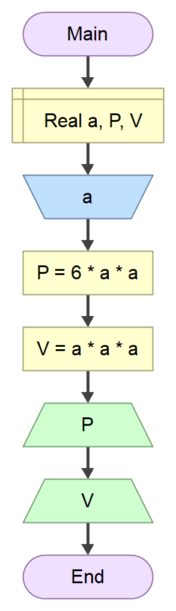
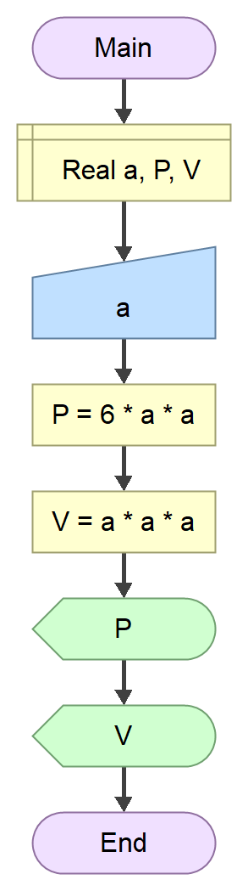

Алгоритми¶
Увод¶
Поступак решавања проблема на рачунару можеш посматрати у фазама:
Декомпозиција: разлагање проблема на мање проблеме истог типа које је једноставније решити.
Препознавање шаблона: препознавање правилности и препознавање типова података.
Апстракција: препознавање општих принципа који производе шаблоне.
Дизајн алгоритма: развијање поступка корак по корак за решавање проблема.
Овакав начин решавања проблема, данас популарно назван рачунарско размишљање (енгл. Computational Thinking), од суштинског је значаја за развој софтвера, али се може користити и за решавање проблема у свим дисциплинама, а нарочито у природним и техничким наукама.
Дефиниција и особине алгоритма¶
Алгоритам представља прецизан опис поступка за решавање неког проблема у коначном броју корака. Сваки од ових корака назива се алгоритамски корак. Спровођењем алгоритамских корака долази до трансформације улазних података у тражене резултате. Примена алгоритма на задате улазне податке ради добијања резултата назива се извршавање алгоритма.
Из датих дефиниција можеш да закључиш да је алгоритам прецизно упутство за решавање задатака. Међутим, није баш свако упутство за решавање задатака алгоритам. Алгоритам треба да поседује следеће особине:
Одређеност (детерминистичност): алгоритамски поступак рашчлањен је на коначан број корака, где је једнозначно одређен први и сваки следећи корак, све до последњег. Ако више пута примениш алгоритам на исте улазне податке, увек ћеш истим корацима доћи до истих резултата.
Резултативност (усмереност): алгоритамски поступак треба увек да се заврши после ограниченог броја корака, где не смеју постојати препреке за његово извршавање. Алгоритам је применљив на улазне податке ако се његовим извршавањем добија тражени резултат. Алгоритам није применљив ако се никада не зауставља или се зауставља на једном од корака без резултата.
Масовност: алгоритам не треба да служи за решавање једног случаја, већ за целу класу задатака истог типа.
Запис алгоритма¶
Постоје два основна правила за записивање алгоритама:
записани алгоритам треба да буде јасан и разумљив програмеру, и
на основу записаног алгоритма програмер може да напише рачунарски програм.
Алгоритме можеш записати на више начина, а обично се то ради текстуално или помоћу дијаграма тока. На пример, треба записати алгоритам који ће на основу унете вредности странице коцке \(а\) израчунати површину коцке \(P\) и запремину коцке \(V\). Алгоритам за решавање овог проблема би се могао записати на следећи начин:
Нека су променљиве a, P и V реални бројеви.
Унети вредност променљиве а.
Израчунати вредности променљивих P и V, где је:
P = 6 * a * a
V = a * a * a
Штампати вредности променљивих P и V.
Овака начин записа алгоритама назива се неформални запис. Неформално записани алгоритми су применљиви на једноставним задацима. Међутим, ако је потребно решити неки комплекснији проблем, неформални запис алгоритма постаје непрегледан и непрецизан. Због тога су се развили формални начини записа алгоритама и то:
текстуално - псеудокодом, и
графички - дијаграмом тока.
Псеудокод¶
Псеудокод можеш посматрати као програмски кôд у говорном језику за запис алгоритма. Префикс „псеудо” (грчки ψευδο) преводи се као фалсификат, што значи да записани кôд није записан конкретним програмским језиком већ лажним, измишљеним језиком. Иако је у питању лажни или измишљени програмски кôд, у односу на неформални запис, псеудокод треба да користи доследну синтаксу. Имајући то у виду претходни пример можеш записати у псеудокоду на следећи начин:
Функција Главна
Деклариши Реалан_број a, P, V
Унеси a
Додели P = 6 * a * a
Додели V = a * a * a
Испиши P
Испиши V
Крај
Иако у оквиру псеудокода треба доследно користити синтаксу, не постоји стандард за писање псеудокода. Због тога ћеш у уџбеницима програмирања или другим ресурсима за учење програмирања наилазити на различите стилове писања псеудокода. C програмер би вероватно претходни псеудокод записао на следећи начин:
главна()
{
реалан_број a, P, V;
унеси(a);
P = 6 * a * a;
V = a * a * a;
испиши(P);
испиши(V);
}
Дијаграм тока¶
Дијаграм тока или алгоритамска шема служи за графички приказ алгоритма помоћу одређених графичких симбола повезаних стрелицама. Графички симболи садрже текст којим је описан један алгоритамски корак, а сваки симбол има одређено значење. Претходни пример можеш представити дијаграмом тока на следећи начин:
{kind=link}
Као и у случају писања псеудокода, постоји више стилова записивања дијаграма тока. Исти дијаграм тока у „IBM” стилу изгледао би овако:
{kind=link}
За запис алгоритама у овом курсу користићеш класични трапезоидни стил, онако како је представљен у софтверу Flowgorithm.